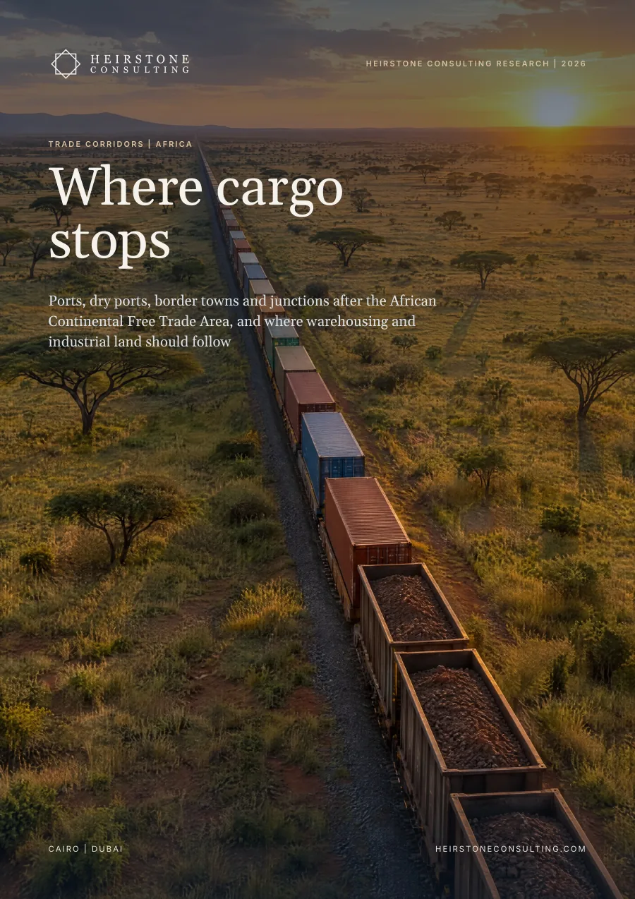

Real Estate Strategy
Ports, dry ports, border towns and junctions after the African Continental Free Trade Area, and where warehousing and industrial land should follow, from Morocco and Egypt to Kenya, Tanzania, Zambia, Nigeria and Côte d'Ivoire.
Also available in French: Corridors commerciaux en Afrique: Là où le fret s’arrête. Choose the language when you request the report.

The report in six numbers
average dwell of containerised cargo at the port of Mombasa in 2025, more than twice the port's 48-hour target
share of its 450,000 TEU design capacity that Kenya's Naivasha inland container depot used in 2025; Nairobi's depot used 69%
share of AfCFTA country pairs in which both sides had gazetted their tariff schedules by April 2025 (Heirstone analysis)
population growth of Chirundu, on Zambia's first one-stop border post, between the 2010 and 2022 censuses; Lusaka grew 27%
prime logistics rent per m² a month in seven corridor cities in H2 2025, with yields from 8% near the coast to 13% in Kampala
of Lusaka South MFEZ's 548.6 ha of industrial land allocated by June 2025, with 20 investors waiting
In brief
Corridors are usually sold by the kilometre. This report measures them in hours and tonnes at 34 nodes in 22 countries, from Tanger Med and Port Said to Mombasa, Dar es Salaam, Lagos and Zambia's border towns. Much of a container's time between ship and customer is lost at the port gate and in the inland clearance yard, and the land that gains value is the land that removes those hours.
Fifty countries have ratified the AfCFTA, but only 23 had gazetted their tariff schedules by April 2025, so on that count about 21% of country pairs could use its tariffs. Intra-African trade was 14.7% of Africa's trade in 2024, against 21.2% inside ASEAN.
Containerised cargo waited an average of 106.7 hours at Mombasa in 2025, over twice the port's 48-hour target. Trucks need 30 to 35 hours to move a box from Dar es Salaam port to the Kwala dry port, against about an hour by rail. Land borders with one-stop posts take about 40 minutes to 12 hours.
Naivasha's depot used 1.8% of its capacity in 2025 and the Addis Ababa-Djibouti railway about 16%, while Nairobi's depot ran at 69%. On Wikipedia's figures, the Ethiopian line's capital cost was US$1,100 to 1,400 per tonne carried in 2025, and Lobito's 4.6 Mt target is 1.4 times the Benguela line's 1973 peak.
Port Said ranked 3rd and Tanger Med 5th in the World Bank's 2024 port index, while most Sub-Saharan gateways ranked 309th to 405th in the 2023 edition. At the hubs land value sits in free zones, at the gateways in land that relieves the gate.
Between Zambia's 2010 and 2022 censuses Chirundu grew 161% and Nakonde 118%, against 27% for Lusaka, and Beitbridge is five times its 1992 size. Pass-through posts such as Malaba stay small, and Chirundu's one-stop gains eroded as traffic grew.
Prime logistics rents sit at US$4 to 7 per m² a month, and only Lagos and Kampala are above their 2021 level. Yields of 12 to 13% in Kampala and Lusaka, against 8 to 10% near the coast, show where faster corridors could add most value, and serviced land at working nodes is full.
What it means
Hold regional stock where cargo clears customs and trains run, and check each trade lane against the list of gazetted schedules before counting on tariff savings.
Underwrite measured throughput and hours saved, treat design capacity as a ceiling and expect most of the return from land and yield compression.
Buy within reach of the gate and build in towns where cargo breaks bulk: container freight stations, truck parks, bonded yards and workforce housing.
Publish dwell times and release serviced land beside working gates and depots. In the cases reviewed, designation alone has not brought occupiers.
Inside the full report
Heirstone datasets
corridor nodes in 22 countries in the Heirstone Corridor Node Benchmark: hubs, gateway ports, inland depots, border towns and junctions
nodes scored on the five-part Heirstone Node Test, from 4 to 8 points out of 10
ports, rail lines and inland depots in the Heirstone Capacity Use Ledger, from Naivasha at 1.8% to Lomé at 89%
Built from public sources current at October 2026. Every figure is referenced in the report, and figures we derive by combining published numbers are labelled Heirstone analysis.
Less than the treaty suggests. Fifty countries have ratified it, but only 23 had gazetted their tariff schedules by April 2025, so about 21% of country pairs could use its tariffs. Intra-African trade was 14.7% of Africa's trade in 2024, against 21.2% inside ASEAN.
Where cargo has to stop and hours are being cut: beside working port gates and rail-served depots, and in border towns where cargo breaks bulk. Chirundu grew 161% and Nakonde 118% between Zambia's 2010 and 2022 censuses, against 27% for Lusaka.
Prime logistics rents were US$4 to 7 per m² a month in seven corridor cities in H2 2025, and only Lagos and Kampala were above their 2021 level in dollars. Prime yields run from 8% near the coast to 13% in Kampala and 12 to 12.5% in Lusaka, with cities further inland pricing higher.
Real Estate Strategy
Heirstone Consulting Research
Speak directly with a senior partner about your project, asset or programme.
Get in Touch